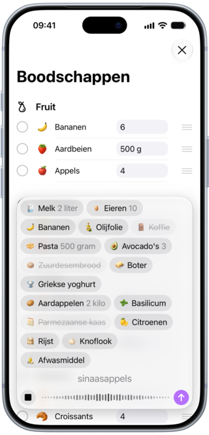
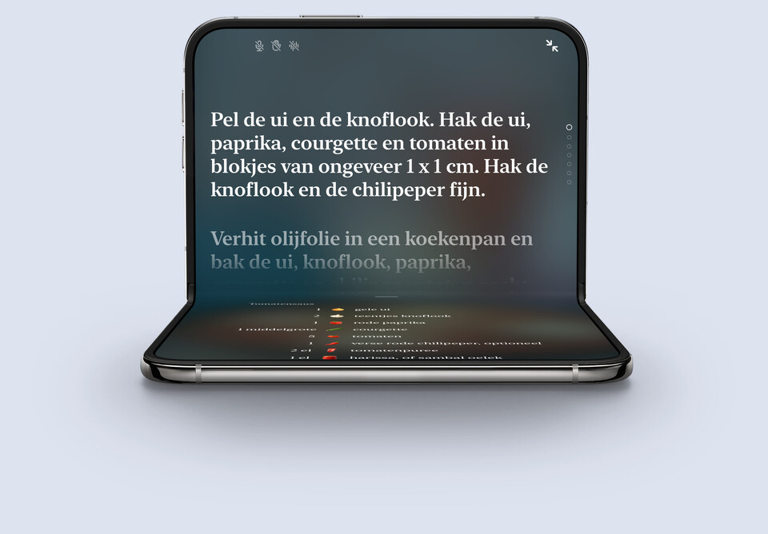
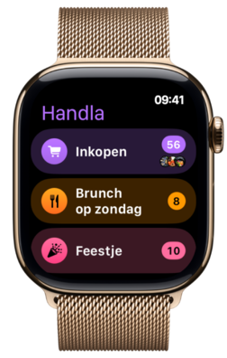
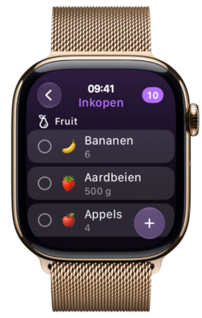
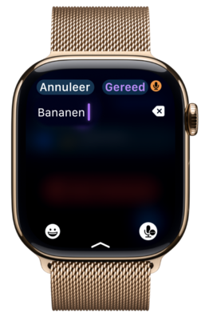

Boodschappenlijst ontmoet maaltijdplan
Van recept naar boodschappenlijstje, gesorteerd per afdeling.
Van recept naar boodschappenlijstje, gesorteerd per afdeling.
Artikelen sorteren zichzelf in de afdelingen van de winkel, elk met een eigen illustratie, en je maaltijdplan staat bovenaan.

Typ een paar letters en Handla raadt wat je bedoelt, en leert wat je het vaakst koopt.

Plak een link naar een receptpagina, een Instagram-reel of een TikTok, en Handla bewaart het recept met de ingrediënten.

Voeg een recept toe en de ingrediënten gaan direct op je lijst, afgestemd op het aantal personen voor wie je kookt.

Een recept gezien op Instagram of TikTok? Deel het direct vanuit de app met Handla en het staat bij je recepten.

Tik op de microfoon en zeg wat je nodig hebt. Elk artikel komt met de hoeveelheid op je lijst, klaar om af te vinken.

Boodschappen, de drogist, het zomerhuisje. Geef elke lijst een eigen naam, kleur en icoon.

Kies uit tientallen kleuren en iconen voor je lijsten, en een bijpassend app-icoon.

Zet een lijst of je maaltijdplan op je beginscherm, en de volgende maaltijd op je toegangsscherm.

Vouw hem open voor het grote scherm. Vouw hem dicht op een recept en de kookmodus neemt het over.

Je lijsten om je pols. Vink af in de winkel en voeg meer toe met je stem.



Handla is een boodschappenlijst-app voor iPhone, iPad en iPhone Duo. Typ een paar letters, kies een suggestie, en het artikel komt in de juiste afdeling van de winkel terecht, met een eigen illustratie. Vink artikelen af terwijl je winkelt, en je lijst wordt korter naarmate je verder loopt.
Weet je wat je gaat koken? Voeg dan het recept toe. De ingrediënten gaan op je lijst, en het recept wacht daar als je maaltijdplan, met timers in de stappen voor als je begint met koken.
Handla is gratis te downloaden en te gebruiken voor een lijst met maximaal tien artikelen. Handla Premium, een abonnement in de app met een gratis proefperiode van 7 dagen, heft die limiet op en geeft je zoveel lijsten als je wilt en onbeperkt opgeslagen recepten. De prijs zie je altijd in de app voordat je iets afsluit, en je kunt op elk moment opzeggen.
Elk artikel dat je toevoegt komt in zijn eigen afdeling, zoals Groente en fruit, Zuivel of Brood, zodat je één keer door de winkel loopt in plaats van heen en weer. Je kunt de afdelingen in de volgorde van je eigen winkel slepen.
Ja. Plak een lijst uit Notities of een bericht, of typ hem, en Handla maakt van elke regel een artikel op de juiste afdeling. Met de Apple Pencil kun je de lijst ook met de hand schrijven.
Ja. Tik op de microfoon en zeg wat je nodig hebt, gerust meerdere dingen tegelijk. Elk artikel komt met zijn hoeveelheid op je lijst. Het werkt ook op de Apple Watch.
Ja. Stuur een lijst als tekst naar wie je maar wilt, via Berichten, Mail of een andere app, of print hem. Recepten en hele maaltijdplannen kun je delen als link, en printen met of zonder foto's om inkt te besparen. Delen stuurt een kopie, dus een lijst blijft niet gesynchroniseerd tussen mensen.
Ja. Voeg een recept toe aan een lijst en de ingrediënten gaan er direct op, gesorteerd per afdeling en afgestemd op het aantal personen voor wie je kookt. Het recept blijft op de lijst staan als je maaltijdplan, klaar voor als het tijd is om te koken.
Ja. Plak een link naar een receptpagina, een Instagram-reel of een TikTok, of deel hem vanuit Safari of de app met Handla, en Handla bewaart het recept met de ingrediënten en de stappen.
Ja. Schrijf een recept vanaf nul of pas er een aan dat je hebt bewaard. Handla heeft ook een verzameling vegetarische recepten om mee te beginnen.
Ja. De kookmodus op volledig scherm kan elke stap voorlezen, luistert naar commando's als “volgende stap” en bladert verder als je je hand opsteekt. De timers zitten in de stappen, dus een timer starten is één tik.
Ja. Zet een lijst of je maaltijdplan op het beginscherm, en houd de volgende maaltijd of het aantal artikelen op een lijst in het oog op het toegangsscherm.
Ja. Handla is gemaakt voor iPhone, iPad en iPhone Duo. Klap de Duo open en je lijsten vullen het grote scherm, met een optionele navigatiekolom en een kaartweergave gemaakt voor de extra ruimte.
Ja. Je lijsten gaan mee om je pols: vink artikelen af terwijl je winkelt, voeg er meer toe met je stem en bekijk wat er op het weekmenu staat. Een complicatie op de wijzerplaat opent een lijst of voegt met één tik een artikel toe. De Watch krijgt zijn lijsten van je iPhone.
Engels, Zweeds, Deens, Duits, Spaans, Fins, Frans, IJslands, Japans, Noors en Nederlands, inclusief de namen van alle boodschappen.
Nee. Je hoeft je nergens voor aan te melden. Je lijsten en recepten worden op je apparaat bewaard.
Nee. Handla is een app voor iPhone en iPad.
Schrijf ons op hello@filibaba.com, of kijk bij Support. We lezen alles.